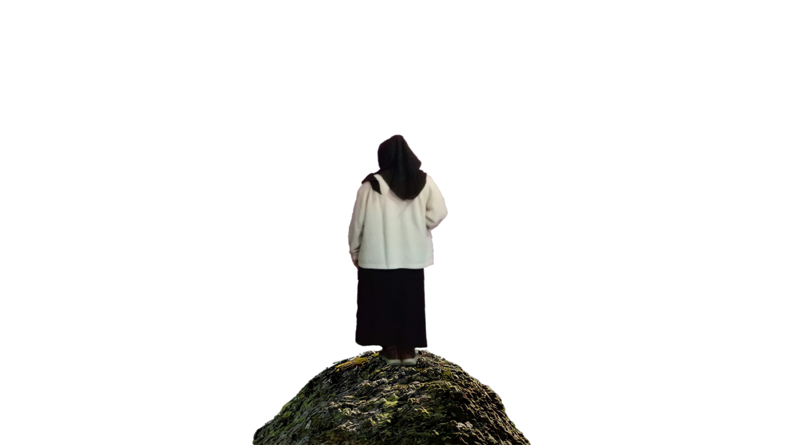
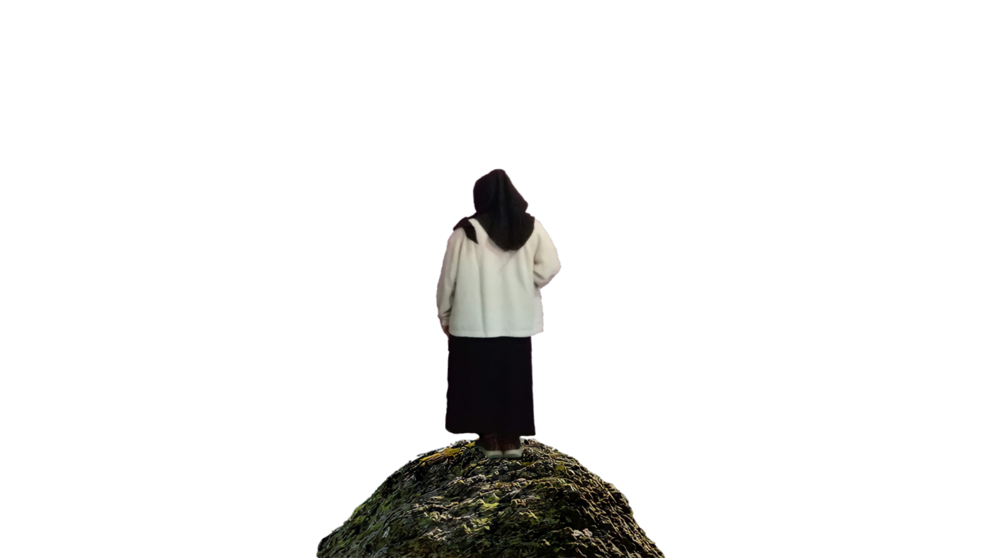

| DATA DIRI | KETERANGAN | FOTO |
| Nama | Chafi Aprillya Rahma Zakiy |  |
| Pekerjaan | Mahasiswa | |
| Sekolah | Universitas Trunojoyo Madura | |
| Fakultas | Teknik | |
| Program Studi | Sistem Informasi | |
| NIM | 210441100067 | |
| Tempat/Tanggal Lahir | Surabaya, 09 April 2003 | |
| Alamat | Surabaya, Jawa Timur | |
| Agama | Islam | |
| Jenis Kelamin | Perempuan | |
| Hobi | Desain, Baca Buku |
| RIWAYAT PENDIDIKAN |
|---|
| UNIVERSITAS TRUNOJOYO MADURA (2021 - Sekarang) |
| SMK KAWUNG 1 SURABAYA (2018 - 2021) |
| SMP BARUNAWATI SURABAYA (2015 - 2018) |
| SDN JEPARA 1 SURABAYA (2009 - 2015) |